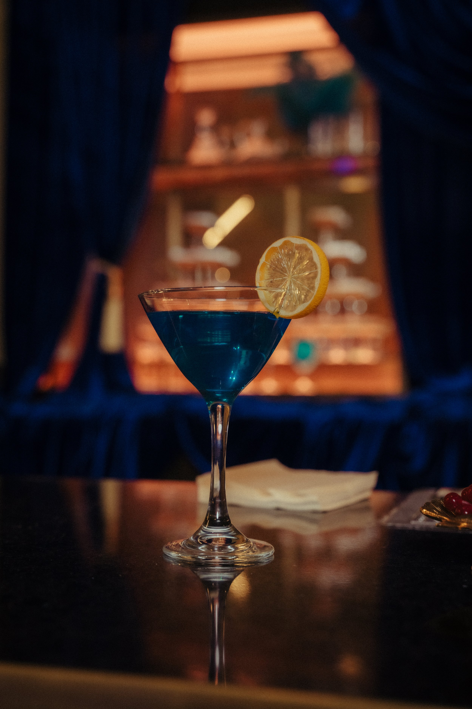
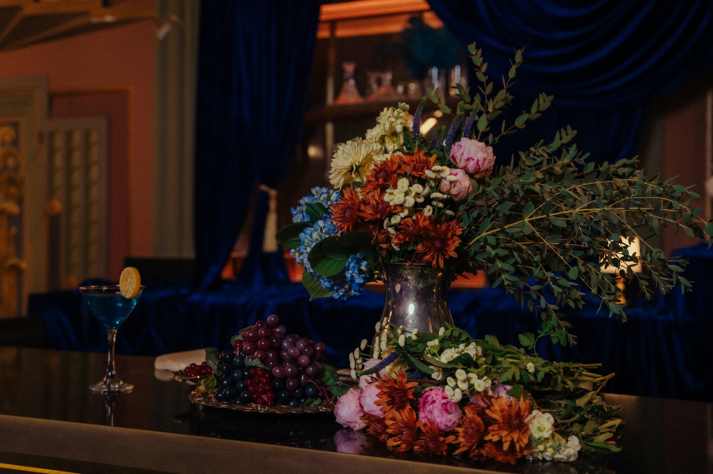
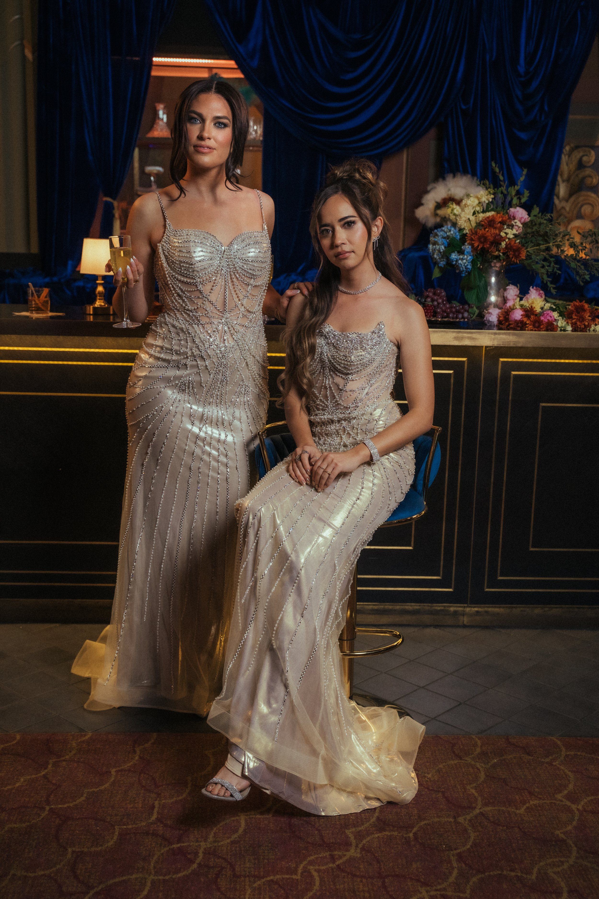
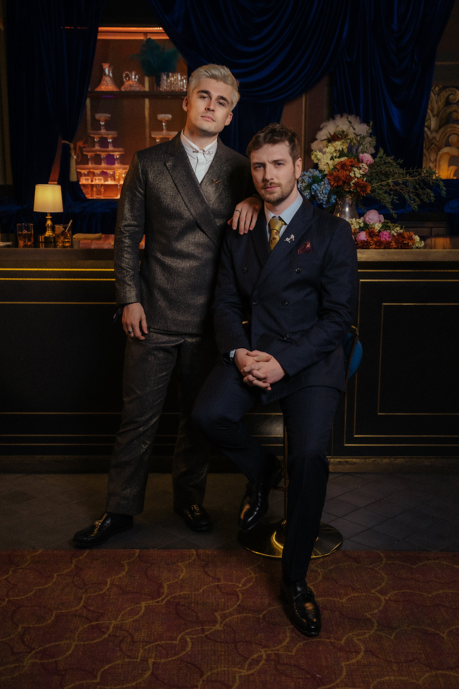
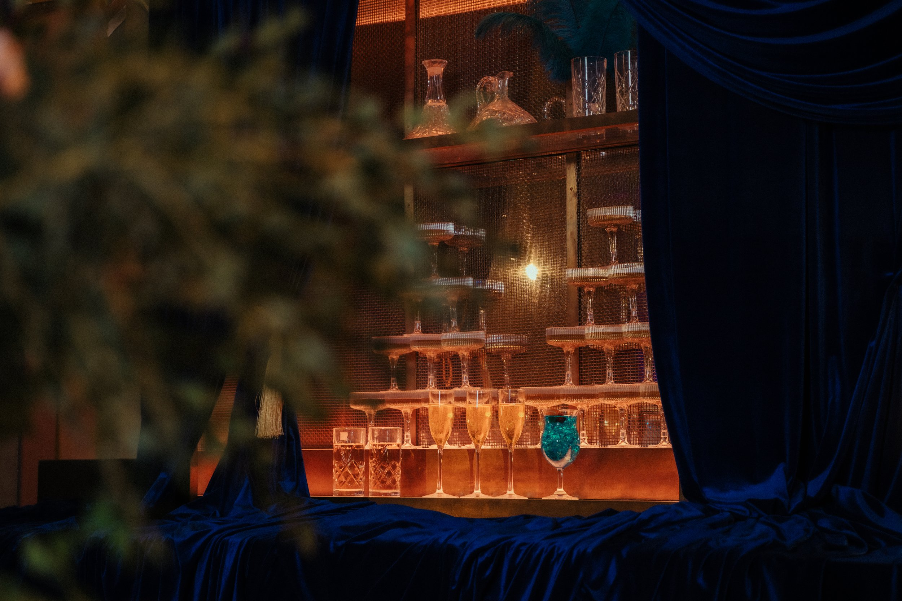

Streamer awards
Client: The Streamer Awards
Year: 2025
Role: Set Design | Art Direction | Photography
For the 2025 Streamer Awards, we transformed the Wiltern’s bar into a fully realized photo-op destination that felt aligned with the show’s blue-and-gold identity. Instead of relying on a stand-alone backdrop, we layered custom fabrics throughout the existing bar architecture, using its lines and textures to our advantage while reshaping the space to match the event’s visual tone.
To enhance interaction, we incorporated themed props - like faux cocktails that guests could pose with without risking spills on their outfits - alongside curated floral arrangements that added color, depth, and dimension to the scene. The result was a polished, red-carpet-ready environment that elevated the guest experience, maximized the venue footprint, and encouraged creators to capture and share the moment throughout the night.
The event set a new viewership record, drawing over 1 million peak concurrent viewers across livestream platforms, with over 100 guests coming through the bar for photos.





